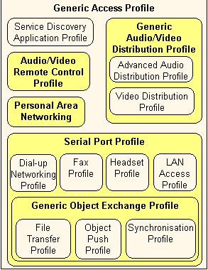

Provides implementations of some Bluetooth profiles and support for others. (Some Bluetooth profiles are omitted.)
This document introduces Bluetooth profiles and indicates the current status of those profiles within the Symbian platform Bluetooth subsystem. A Bluetooth profile encompasses a defined set of functionality for an operation or task, identifies the Bluetooth stack features required to perform the operation or tasks and describes how those features are used.
By specifying these details Bluetooth profiles make a significant contribution to realising the interoperability goals of the Bluetooth consortium. If all device manufactures implement the profiles according to the standards users can confidently purchase Bluetooth enabled devices knowing that they will all work.
In this overview
You will learn about the status of the Bluetooth profiles, those that are implemented, those that are supported and those that are omitted from the current Symbian platform Bluetooth subsystem. Documentation will be provided for each of the supported profiles and this page will be updated with links as they become available.
The standards define terminology specific to individual profiles. Please refer to the latest Bluetooth standard at www.bluetooth.com for all official definitions.
There are two kinds of profiles provided for by Symbian platform: implemented and supported. Implemented profiles can be used directly from the existing components. When a profile is supported the licensee will need to provide its own APIs to make the functionality of that profile available to application developers.
Figure 1 above shows the dependencies of profiles. The shaded profiles, discussed in the next section, are implemented by the Symbian platform Bluetooth subsystem.
Implemented Bluetooth profiles
The following profiles are implemented by Symbian platform Bluetooth:
Generic Access Profile (GAP)
Serial Port Profile (SPP)
Generic Object Exchange Profile (GOEP)
Personal Area Networking (PAN) Profile
Audio Video Remote Control Profile (AVRCP)
Generic Audio Video Distribution Profile (GAVDP)
Advanced Audio Distribution Profile (A2DP)
The profiles are introduced here:
The Generic Access Profile is the foundation Bluetooth profile. It enables two devices to discover and connect to each other in a piconet. GAP defines the mode of operation for participating devices, handles role assignment, and controls the connection and link functionality at protocol level.
The Generic Access profile, as the basic piconet enabler, uses features of the RFCOMM, L2CAP, Link Manager and Link Controller layers of the Bluetooth stack. As an application developer you do not need to concern yourself with the details of the protocols as this is handled internally. The APIs will handle all of the connection, linking and role negotiation for you. Note however that there are no explicit GAP APIs. The GAP functionality is implicit in other APIs within Symbian platform.
The Serial Port Profile gives Bluetooth devices RS-232 emulation capabilities, allowing applications that were written with cable connection in mind to make the transition to Bluetooth. The application establishes a link over the Bluetooth connection without being aware of Bluetooth. The SPP simply emulates a typical RS-232 serial cable communications session. The SPP enables multiplexing and provides support for two device types: communication endpoint devices and intermediate devices. SPP operates on the RFCOMM and L2CAP layers of the Bluetooth stack.
The SPP is an integral part of the following profiles:
| Bluetooth Profile | Supported |
|---|---|
Fax Profile |
Yes |
Dial-up Networking Profile(DUNP) |
Yes |
LAN Access Profile |
Yes |
Headset Profile |
Yes |
Hands Free Profile |
Yes |
Generic Object Exchange Profile |
Implemented |
Phonebook Access Profile |
No |
SIM Access Profile |
No |
Links to examples, guides, and tutorials that use the SPP will be provided here as they become available.
The Generic Object Exchange Profile provides the functionality needed to use the Object Exchange (OBEX) Protocol over Bluetooth. GOEP is used by the following profiles:
| Bluetooth Profile | Supported |
|---|---|
Object Push Profile |
Yes |
File Transfer Profile |
Yes |
Synchronisation Profile |
Yes |
GOEP makes a significant contribution to the overall offering by providing client and server roles to the devices of the Bluetooth Piconet. Applications using GOEP can push and pull objects from other devices in the piconet.
The Personal Area Networking profile provides a simplification to the LAN Access and Dial-up Networking profiles (both now deprecated), by reducing the number of layers in a network connection. PAN enhances networking over Bluetooth by providing new functionality such as the Group Ad-hoc Networking role, discussed below.
The PAN profile provides for three possible roles: the User (PANU), Group Ad-hoc Networking (GN) and Network Access Point (NAP).
When a device is operating in the PANU role it can connect to a device operating in any of the three roles. This allows it to act as a client to one of these devices. When operating in the GN role the device can accept a connection request from a PANU device or make its own request to connect to such a device. PANU and GN roles can be switched but a PANU device connecting to a NAP device can not switch roles because NAP is not supported.
PAN is integrated into the networking framework as a plug-in. See the Networking documentation for more information about networking with the Bluetooth PAN profile plug-in. Therefore applications can treat a Bluetooth PAN as any other networking technology.
The Audio video remote control profile implements certain aspects of the AV/C Digital Interface Command Set (IEEE 1394) for use over a Bluetooth connection. This profile defines two possible roles: controller (CT) and target (TG). The controller device sends commands to the target who acts on those commands.
Role switching is possible. Consider a Bluetooth headset with integrated command functions. When the headset is acting in the CT role it can begin music playback or switch songs on the TG Symbian device. The Symbian device can become the CT to send a volume control command to the headset, making the headset the TG for that transaction.
Features of the profile implemented in the Symbian platform Bluetooth subsystem are presented in the following table according to defined role.
| CT | TG |
|---|---|
All Mandatory features. |
All Mandatory features. |
Sending UNIT info command. |
Initiating connection for control. |
Sending subunit info command. |
Receiving pass through commands. |
Sending pass through commands. |
Sending all operation_ids. |
Sending all operation_ids. |
Receiving all operation_ids. |
Receiving all operation_ids. |
|
AVRCP operates over a GAP connection, communicating via the Audio Video Control Transport Protocol (AVCTP) on a channel in the L2CAP layer. Application developers will use the Remote Control Framework for creating apps that use the AVRCP.
The Generic audio video distribution profile provides the mechanism for distributing audio and video content over a Bluetooth connection. There are two roles defined for GAVDP, they are: Initiator (INT) and Acceptor (ACP). INT begins a signalling procedure and ACP responds. The roles are not linked to the master / slave relationship between devices and can switch when a new procedure is initiated.
GAVDP has been implemented in the Symbian platform Bluetooth subsystem specifically to support the Bluetooth stereo headset usecase. The Audio Video Distribution Transport Protocol (AVDTP) manages the transmission of audio packets over an L2CAP channel. The GAVDP component of the Bluetooth subsystem provides an API to configure, send and receive data over the AVDTP within an ESock plug-in.
The Advanced Audio Distribution Profile describes the protocols and procedures to stream high quality stereo audio over Bluetooth.
Supported Bluetooth Profiles
The following list indicates profiles for which the Symbian platform subsystem has provided the necessary framework should a licensee have a need to implement them. Application developers should refer to the documentation for the platform(s) they are targeting to determine which additional profiles (if any) are available for a particular device.
The Bluetooth profile implementers guide, available soon, describes how licensees can enable profiles on their devices.
Advanced Audio Distribution Profile
Linked to MMF.
Video Distribution Profile
Linked to MMF.
File Transfer Profile
Synchronization Profile
Fax Profile
Dial Up Networking (DUN) Profile
Headset Profile
Hands Free Profile
Use the Remote Control Framework.
HID Profile
Device ID Profile
Basic Printing Profile
Basic Imaging Profile
Service Discovery Application Profile
Unrestricted Digital Information Profile
Omitted Bluetooth profiles
The following profiles are explicitly omitted from the Current Symbian platform Bluetooth subsystem:
Copyright ©2010 Nokia Corporation and/or its subsidiary(-ies).
All rights
reserved. Unless otherwise stated, these materials are provided under the terms of the Eclipse Public License
v1.0.